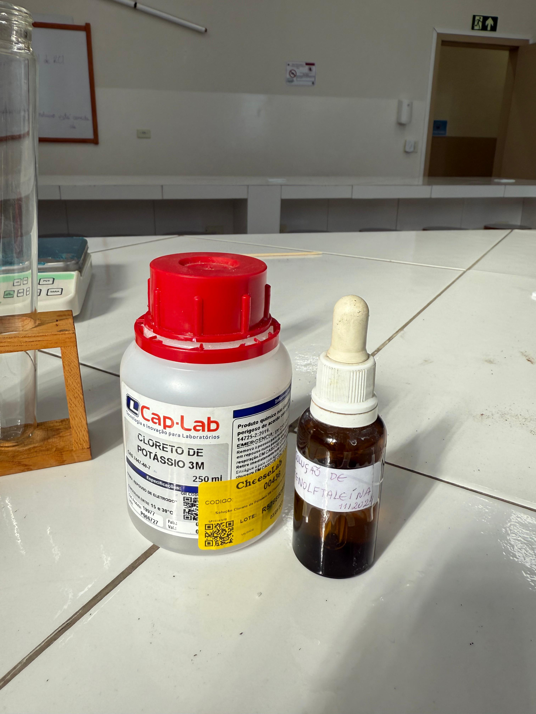
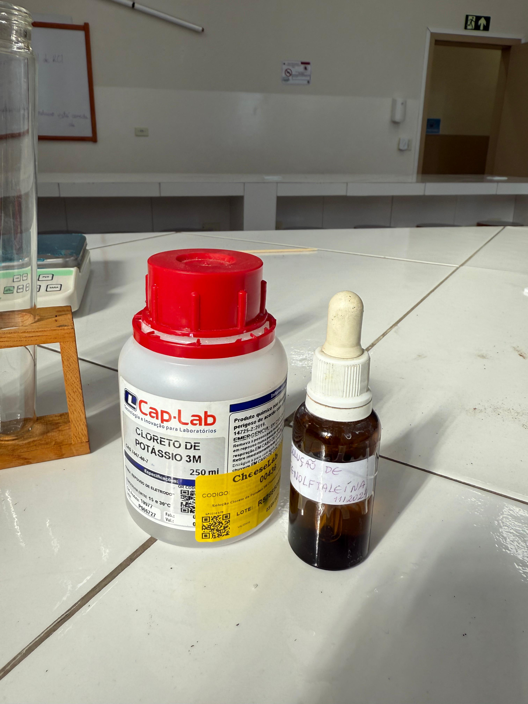

Irrigador Automático
 Projeto Laranjeiras
Projeto Laranjeiras

Em 2025, o Concurso Agrinho Robótica, promovido pelo Sistema FAEP/SENAR-PR em parceria com o Governo do Paraná, tem como tema central “Festejando a conexão campo-cidade”. Esse tema visa promover ações, ideias e projetos que ofereçam soluções sustentáveis para o agronegócio, integrando a criatividade de estudantes e professores com seus conhecimentos acadêmicos e recursos tecnológicos

Nosso projeto nasceu com a ideia de tornar a vida no campo mais fácil, eficiente e conectada. Queremos mostrar que a tecnologia pode ser uma grande aliada do agricultor, ajudando no cuidado diário com as plantações de forma prática e inteligente.
Através de soluções que facilitam o monitoramento e o uso consciente da água, buscamos contribuir para uma agricultura mais moderna, sustentável e acessível. É uma forma de unir inovação e simplicidade, oferecendo apoio real a quem trabalha com a terra e mostrando como o campo e a tecnologia podem caminhar juntos para um futuro melhor.
O Greening é uma doença grave que ataca as laranjeiras, causada por uma bactéria transmitida pelo inseto psilídeo. Ela enfraquece a planta e compromete os frutos.
Para ajudar no combate, nosso projeto usa o ESP32-CAM para tirar fotos de armadilhas na plantação e enviar essas imagens para agrônomos analisarem à distância. Assim, é possível detectar a presença do inseto mais rápido e agir antes que a doença se espalhe.

Irrigador Automático
Sensor de Chuva
Captador de Água
Display de Informações
Identificador de Greening
Transmissor de Informações
- Sensor de úmidade, Relé, Bomba de Água
- Sensor de Água, Módulo Convensor
- Servo Motor
- Display OLED
- ESP32-CAM, Módulo conversor/conversor
- nao sei


Para cultivar laranjeiras com sucesso, o solo precisa ser profundo, fértil, bem drenado e ter pH entre 6,0 e 7,5. No Paraná, o solo mais comum é o latossolo, que possui boa drenagem, mas baixa fertilidade e pH ácido. Por isso, é necessário corrigir o solo com calcário e fazer adubação com fósforo e nitrogênio.
Nas análises feitas no colégio, o solo apresentou pH médio de 5,0, indicando acidez. Para corrigir esse problema e aproximar o pH do ideal, foi adicionado cal à terra, elevando o pH para 6,5, o que favorece o desenvolvimento saudável da laranjeira.

Calculamos os custos do projeto e comparamos com os benefícios econômicos para o pequeno produtor.


 



Aqui estão alguns links para você se aprofundar no nosso projeto:
Quer entender melhor o objetivo do nosso projeto? Acesse: Site Agrinho Robótica
Não sabe como cultivar sua própria laranjeira? Veja esta dica: Como Germinar sua Laranjeira
Ficou curioso sobre o greening? Veja esse vídeo: Greening
Ideias relacionadas ao projeto: EMBRAPA- projeto Anti-greening